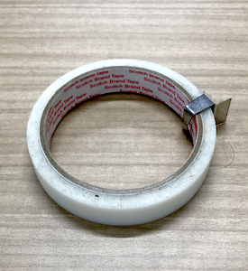

<!DOCTYPE html>
<html>
<head>
    <meta http-equiv="Content-Type"  content="text/html; charset=UTF-8">
    <meta name="viewport" content="width=device-width,initial-scale=1.0">
    <script src="./dist/jspsych.js"></script>
    <script src="./dist/plugin-html-button-response.js"></script>
    <script src="./dist/plugin-preload.js"></script>
    <script src="./dist/plugin-instructions.js"></script>
    <script src="./dist/plugin-fullscreen.js"></script>
    <script src="./dist/plugin-survey-html-form.js"></script>
    <script src="./dist/plugin-survey-likert.js"></script>
    <script src="./dist/plugin-html-keyboard-response.js"></script>
    <script src="./myFunc.js"></script>
    <link rel="stylesheet" href="./dist/jspsych.css"></link>
    <link rel="stylesheet" href="./smartphone.css"></link>
    <style>
        .bold{
            font-weight: bold;
        }
    </style>
</head>
<body></body>
<script>

    // const や let は、varと基本的には同じ意味ですが、
    // const はプログラム全体を通じて変更されない値、letは変更を許可する変数になります。

    const jsPsych = initJsPsych({
        on_finish: function() {
            // jsPsych.data.displayData();
            // jsPsych.data.get().localSave('csv','mydata.csv');
        }
    })
    console.log(`jsPsych Version ${jsPsych.version()}`) // JavaScriptコンソールに、現在お使いのjsPsychのバージョンが表示されます。

    const experiment = []; // この配列に、プラグインの情報をpush していきます。
    const myrandID = jsPsych.randomization.randomID(8); // 調査ごとに参加者にランダムに割り当てる文字列

    // 画像の事前読み込み。プラグインによっては自動読み込みをしてくれますが、常に手動で読み込みほうが安全です。
    const images = [
        './img/pen.png',
        './img/tape.png'
    ];
    const preload = {
        type: jsPsychPreload,
        images: images,
    }
    experiment.push(preload)
    
    // 教示およびインフォームドコンセント
    const instruction = {
        type: jsPsychInstructions,
        pages: ['<p>教示の1ページ目</p>', // <p>タグは paragraph を意味します。
        '<p>教示の2ページ目</p>'],
        show_clickable_nav: true,
        show_page_number: true,
        button_label_previous: '戻る',
        button_label_next: '次へ',
        page_label: 'ページ',
        on_finish: function(data){
            jsPsych.data.addProperties({
                date: getDateStr(), // myFunc.jsに書かれた自作関数を使用しています。
                randomID: myrandID})
        }
    };
        
    experiment.push(instruction);

    // フルスクリーンモード
    const enter_fullscreen = {
        type: jsPsychFullscreen,
        fullscreen_mode: true,
        message: `<div class="instruction"><p>調査に関係のないアプリケーションを可能な限り終了してください。</p>
        <p>また、ウェブブラウザで複数のタブを開いているときには、それらも閉じてください。</p>
        <p>下のボタンを押すとフルスクリーンモードに変更します。調査を中断するためにフルスクリーンを解除したいときにはESCキーを押してください。</p></div>`,
        button_label: '次へ',
    }
    experiment.push(enter_fullscreen)

    // 年齢と性別に関する質問。
    let age_option_string = '<option value="">年齢を選択してください</option>';
    for (let i = 10; i <= 80; i++){
        age_option_string += '<option value="' + i + '">' + i +'歳</option>';
    }

    // htmlプロパティでは、テンプレートリテラルを使用しています。慣れると便利ですよ。
    // https://developer.mozilla.org/ja/docs/Web/JavaScript/Reference/Template_literals
    const gender_age_form = {
        type: jsPsychSurveyHtmlForm,
        preamble: `<h2>あなたの性別と年齢を回答してください</h2>`,
        html: `<input type="radio" name="gender" value="1" required>女性
            <input type="radio" name="gender" value="2">男性
            <input type="radio" name="gender" value="3">その他・無回答
            <div> </div>
            <select class="age" required name="age">${age_option_string}</select>
            <div> </div>`,
        button_label: '次へ',
        data:{phase:2},
        on_finish: function(data){
            jsPsych.data.addProperties(data.response) // 結果が見やすくなるように
        }
    }
    experiment.push(gender_age_form);

    const scale = ["<p>1<br>まったくそう思わない</p>", "<p>2<br>あまりそう思わない</p>", "<p>3<br>どちらでもない</p>", "<p>4<br>ややそう思う</p>", "<p>5<br>非常にそう思う</p>"];
    const likert_trial = {
        type: jsPsychSurveyLikert,
        preamble: jsPsych.timelineVariable('image_tag'),
        questions: [
          {prompt: "美しい", name: 'Beautiful', labels: scale, required: true},
          {prompt: "好き", name: 'Favorite', labels: scale, required: true}
        ],
        button_label: '次へ',
        data: function(){
            // 呈示した画像のファイル名を記録
            // timelineVariableは、'　このような文字列を想定。imgの直後がsrc以外だと不具合があるので要注意。
            return {img_file_name: getFileName_from_imgTag(img_tag_str)} // getFileName_from_imgTagはファイル名を返す自作関数。オブジェクト形式で return
        },
        on_finish: function(data){
            // リッカート尺度の回答について、左端が1になるように変更しています。（変更前は0です）
            // こだわりがなければ、わざわざ行わなければいけない作業ではありません。
            const likert_resp = {};
            const resp_label = Object.keys(data.response);
            resp_label.forEach(question_label => {
                const resp = data.response[question_label];
                if (typeof resp !== 'undefined' && (resp !== "")){
                    const kaito = Number(resp) + 1; // 未回答なら記録しない。 回答を数字に変換し、開始番号を１とする。
                    likert_resp[question_label] = kaito;
                }
            })

            // 調査内容によって、addToLastを使うか、addPropertiesを使うかを決めてください。
            // addToLastでは1行にデータが入り、addPropertiesではすべての行にデータが入ります。
            jsPsych.data.get().addToLast(likert_resp);
            // jsPsych.data.addProperties(likert_resp);
        }
    };

    const main_trials = {
        timeline: [likert_trial],
        timeline_variables: [
            {image_tag: ''}, // images[0]を使う方法もあります
            {image_tag: ''}, // images[1]を使う方法もあります
        ],
        randomize_order: true,
        repetitions: 2
    }

    // timeline_variablesをスマートに作成する方法もあります。
    // const tv = [];
    // images.forEach(file_name => {
    //     tv.push({image_tag: ``})
    // })
    // const main_trials = {
    //     timeline: [likert_trial],
    //     timeline_variables: tv,
    //     randomize_order: true,
    //     repetitions: 2
    // }

    experiment.push(main_trials)

    const exit_fullscreen = {
        type: jsPsychFullscreen,
        fullscreen_mode: false,
        delay_after: 0,
        on_finish: function(){
            // ここではCSVファイルに記録をしていますが、データベースサーバーに記録することも可能です。詳しくは、
            // https://www.jspsych.org/7.3/overview/data/ をご覧ください。
            jsPsych.data.get().localSave('csv','mydata.csv');

            // stimulusが文字化けするときは、stimulusを出力しないこともできます。
            // jsPsych.data.get().ignore('stimulus').localSave('csv','mydata.csv');
        }
    }
    experiment.push(exit_fullscreen)


    const end_msg = {
        type: jsPsychHtmlKeyboardResponse,
        stimulus: `<p>お疲れ様でした。以上で調査を終了いたします。</p>`,
        data:{phase:5},
        choices: "NO_KEYS"
    }

    experiment.push(end_msg)


    jsPsych.run(experiment)

</script>

</html>
